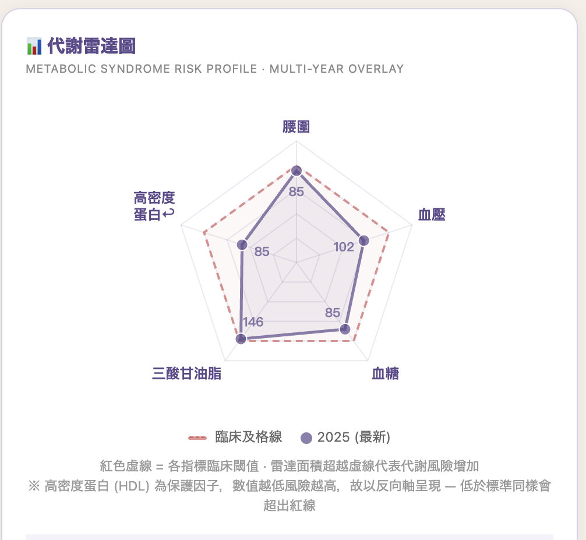
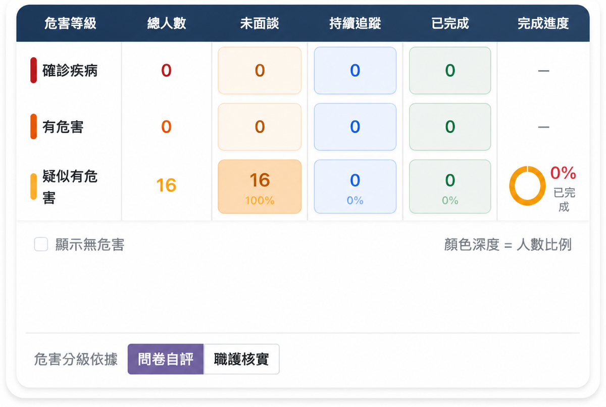
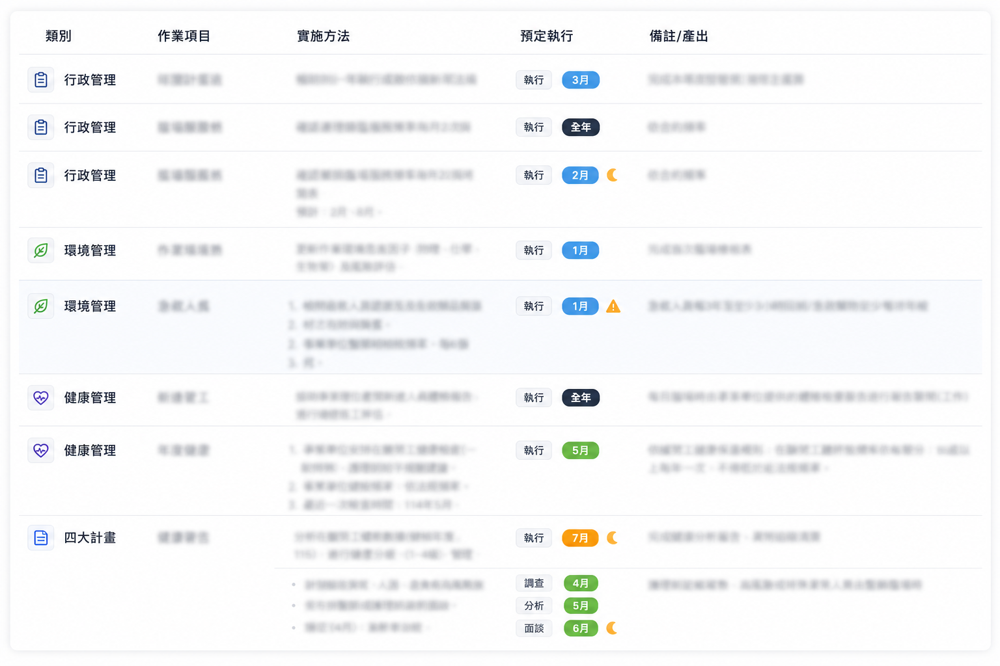
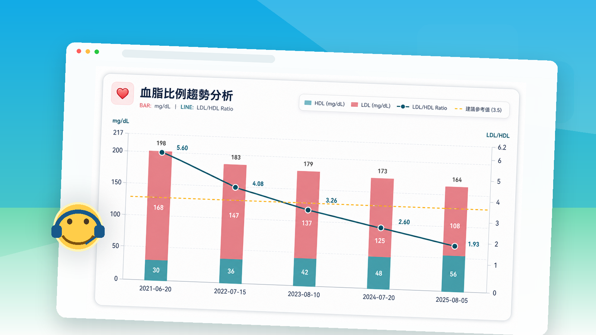
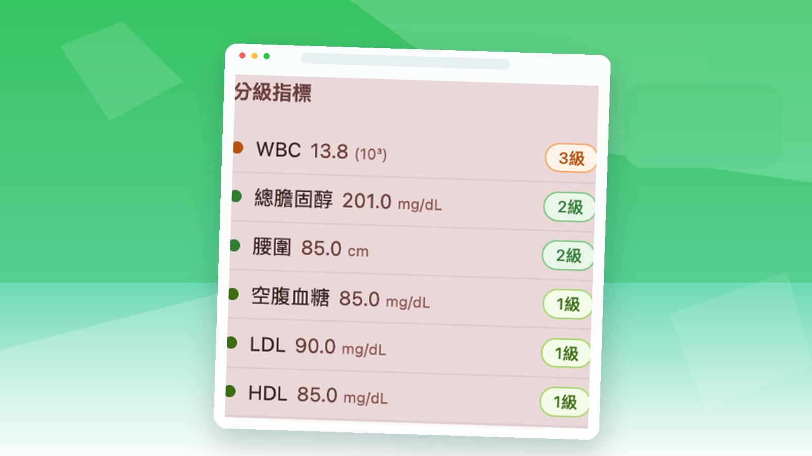
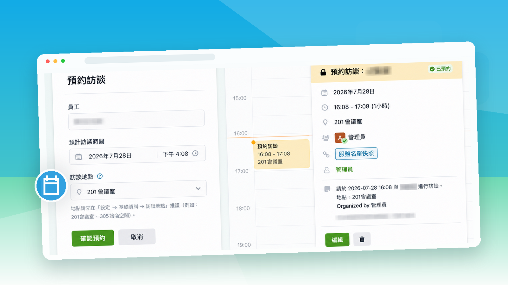
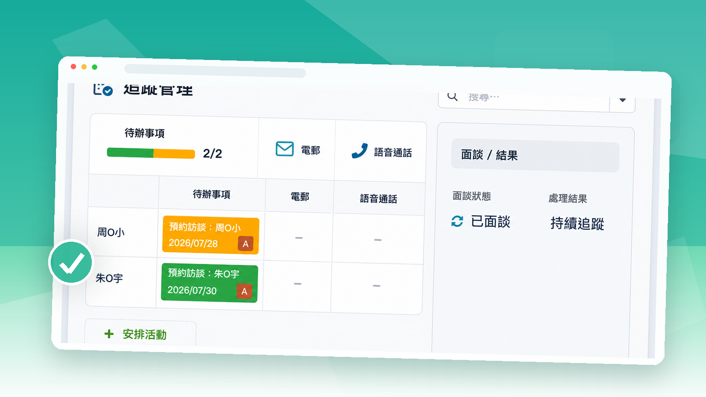
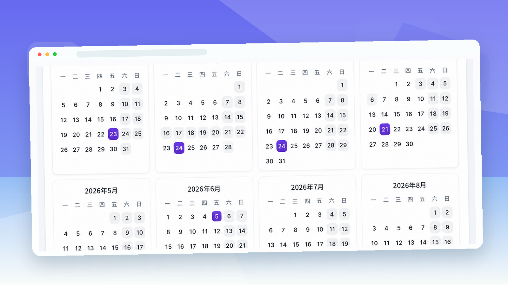
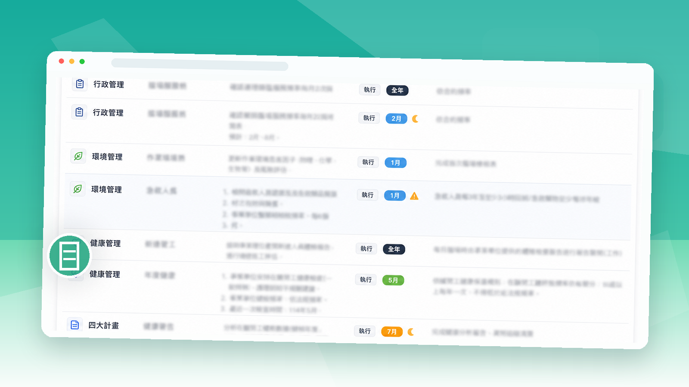

看見員工健康風險
整合健檢、健康問卷與歷年資料，由系統協助辨識異常，再由職護依專業判斷確認。
從大量健康資料中，及早找出需要優先關心的員工。
即將推出
從健檢、健康問卷、風險辨識、專業訪談到個案追蹤，協助企業與專任職護建立完整且持續運作的員工健康管理流程。
讓企業不只完成法定健康管理工作，也能清楚掌握健康風險、服務進度與追蹤結果，降低因資料分散、紀錄缺漏與追蹤中斷所產生的管理風險。
現況痛點
健檢資料放在 Excel，問卷結果另外統計，訪談紀錄存在 Word，個案追蹤依賴行事曆，到了年底，再重新整理年度成果與法規文件。
每一項工作看似都完成了，但資料、流程與追蹤並沒有真正連在一起。
當員工人數增加、健康資料逐年累積，真正困難的就不再只是資料整理，而是：
宸護將健檢、問卷、訪談、個案與服務紀錄集中在同一套流程中，讓職護不必再依靠多份檔案與個人記憶管理員工健康。
宸護如何運作
整合員工健檢、健康問卷與歷年健康資料，建立完整的個人健康基礎。
系統依健檢與問卷結果，自動協助辨識異常與初步分級；職護可依專業判斷調整並保留判定歷程。
針對需要關心的員工，安排職護訪談、職醫面談、健康指導、工作適性評估及相關建議。
建立健康個案、設定追蹤日期與待辦，完整保留每一次處理紀錄。
日常訪談、個案追蹤、臨場服務、改善事項與年度計畫，持續累積為完整紀錄與年度成果。
蒐集健康資料 → 辨識健康風險 → 專業介入 → 持續追蹤 → 累積管理成果
核心價值

整合健檢、健康問卷與歷年資料，由系統協助辨識異常，再由職護依專業判斷確認。
從大量健康資料中，及早找出需要優先關心的員工。

從職護訪談、職醫評估、健康指導到個案追蹤，設定日期、待辦與提醒，完整保留每次處理。
從發現異常到持續追蹤，讓重要個案不被遺漏。

訪談、專業建議、臨場服務、改善事項、年度計畫與法規文件，都在日常工作中持續累積。
讓每一次健康管理工作都有紀錄，企業也有清楚依據。
主要功能

匯入一般、定期與特殊健檢資料，辨識異常並比較歷年變化。

支援員工自行填寫、自動計分、初步風險分級與職護人工調整。

管理排程、通知、訪談紀錄、健康指導、適性評估與工作建議。

建立個案、設定負責人與追蹤日期，管理待辦、提醒、結案與重新開啟。

管理服務排程、時數、訪視、健康促進、教育訓練、改善建議與服務報告。

將日常工作累積為年度成果、附表八、統計報表、PDF 與查核資料。
三方價值
對企業
掌握健康管理執行情況，降低程序缺漏、資料分散與追蹤中斷所產生的管理風險。
對專任職護
減少重複整理、人工提醒與文件彙整，把時間留給專業判斷、健康關懷與個案追蹤。
對員工
可查看個人健康資料；健康風險被辨識後，能獲得較持續的訪談、指導與追蹤。
為什麼選宸護
健檢系統完成檢查，宸護接續管理健檢之後的健康工作。
| 工具 | 擅長處理 | 主要限制 |
|---|---|---|
| Excel | 資料整理、篩選與簡易統計 | 資料分散、版本與公式依賴個人，難以管理長期追蹤與權限。 |
| 紙本／Word | 完成訪談紀錄與單份文件 | 文件彼此不連結，查找、追蹤與年度彙整困難。 |
| 一般健檢系統 | 完成檢查流程與健檢報告 | 通常不處理企業收到報告後的訪談、個案與後續追蹤。 |
| 行事曆／待辦工具 | 提醒某項工作 | 無法同步呈現員工健康資料、風險判定與歷次處理內容。 |
| 宸護 | 整合資料、風險、訪談、個案、服務與紀錄 | 以完整流程持續管理企業員工健康。 |
資料安全
宸護依角色與工作需要區分資料權限。員工只能查看自己的健康資料；專任職護負責日常健康管理；職醫依授權查看需要評估的個案與相關資訊。
導入方式
確認企業員工人數、現有健檢與健康管理方式、主要使用者及導入範圍。
盤點員工資料、歷年健檢格式、問卷與既有個案紀錄。
設定企業、帳號、角色與必要權限。
依確認格式匯入員工與既有健康資料。
協助專任職護、職醫與必要窗口熟悉日常操作。
開始管理健檢、問卷、訪談、個案與年度工作。
持續處理使用問題、資料格式與功能調整需求。
常見問題
不會。系統協助處理資料整理、風險初步辨識、提醒與紀錄保存；專業判斷、員工溝通、健康指導與適性評估仍由職護與職醫完成。
員工可登入個人入口查看自己的健康資料，不會看到其他員工資料或職護內部管理資訊。
支援不同健檢機構資料格式的整理與匯入，實際導入時會先確認欄位與格式。
系統會依健檢與問卷資料進行初步判定；職護可以依實際情況與專業判斷調整，並保留原始數據與調整歷程。
可以，宸護可保存並管理一般、定期、新進與特殊健康檢查資料。
可以。可建立個案、設定負責人、追蹤日期、提醒與狀態，並保留歷次追蹤內容。
職醫可依授權查看需要評估的員工資料與健康歷程，進行面談、適性評估並留下專業建議。
可以。日常訪談、臨場服務、追蹤與改善資料可持續累積為年度成果、表單、報表與 PDF 文件。
最終行動
無論目前使用 Excel、紙本或既有健檢資料，宸護都可從企業現況出發，協助整理導入範圍與實際使用方式。